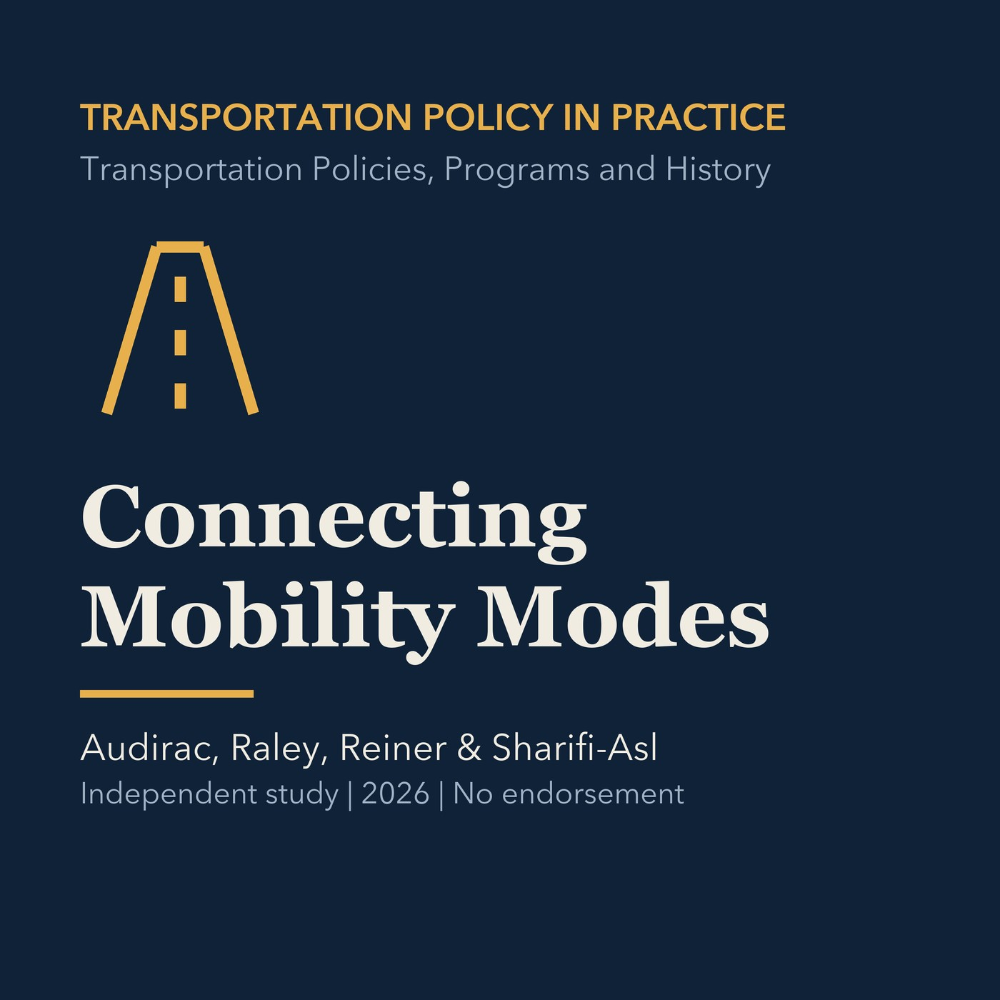

EPISODE 05
Choosing and Connecting Mobility Modes
Compares passenger and freight modes, multimodal and intermodal systems, and mode-selection tradeoffs, with a Torrance network application.

- Stable GUID
349c9bdd-a2c4-5eb7-a3bd-9137e6d0535d- Release
- transportation-policies-programs-history-v2026.3
- SHA-256
0abfce0a8da33315b57342ce6f564e8f4f815272e0e3f04f85b2d4bfcb3ba6f4